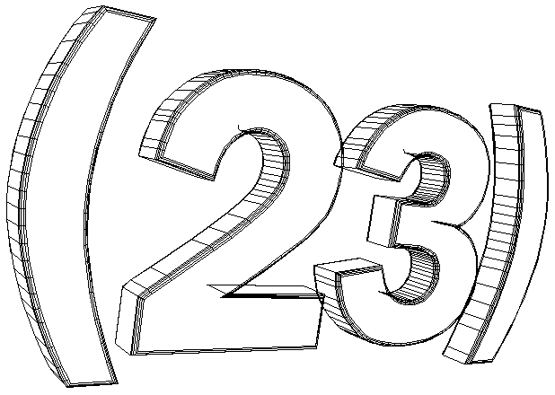

media
collective
(23) is many things.
at its core, however, (23) is an artistic collaboration between like-minded individuals. it is a project which attempts a coming together of the many methods of audiovisual and event presentation.
(23) is also an ongoing project; an amorphous body of work and an undefinable artistic approach. it is in this spirit that the (23) links page has been compiled.
(23) organized another performance event, called SENSE, on 1 december 95. the event incorporated live computer graphics, electronic music, and film. in 1997, (23) has created installation ele_ments for various events including (PHYLOS) on 9 may, with several other underground projects in the works. look under what will be for more information on related ele mental events.
links
this page maintained by eluna@coil.com and cfnoel@freenet.columbus.oh.us
+ last updated 15 jun 97
back to